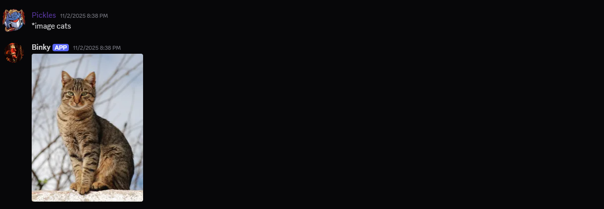
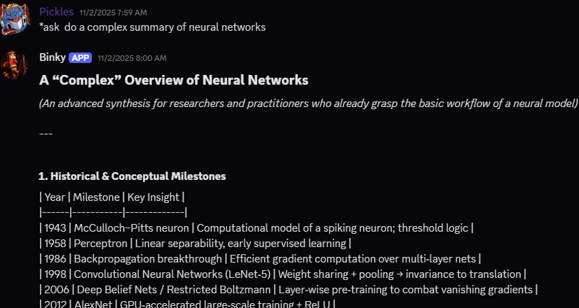

Education
Saint Mary's Academy of Caloocan City
 STI College of Munoz
STI College of Munoz
National University Manila
BSCS Specialization in Machine Learning
Hello! My name is Karl Mago, and I’m currently a third-year BS Computer Science student specializing in Machine Learning. Welcome to my website! Ever since I was a kid, I’ve been very fond of technology and fascinated by how it works, tinkering with gadgets and learning the mechanics behind them. On this website, you’ll get to see my personal projects related to the field I’m studying. I hope you enjoy your visit!
STI College of Munoz
A Python-based machine learning project that identifies colors in real time using computer vision. It includes an integrated SQLite database for user login and authentication.
Collaborators: Adrian Liao, Genesis Navarro
View ProjectA Python-based Discord bot featuring music queuing, AI roleplay, image search, and AI-powered assistance through the GPT API, along with features such as persona prompts.


Email: Karlmago2003@gmail.com
GitHub: github.com/MaboKarl